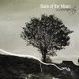

Celtic Lyrics Corner > Artists & Groups > Back Of The Moon > Luminosity > The Brewer Lad
|  | The Brewer Lad |
| Credits : | Traditional |
| Appears On : | Luminosity |
| Language : | Scots-English |
| Other Versions : | " The Brewer Laddie " on the Tannahill Weavers' album Capernaum |
Lyrics :
In Perth there lived a bonnie lad
A brewer tae his trade O
An' he is courted Peggie Roy
A young and handsome maid O
Chorus
:
Wi' a fall dall diddle um a die dum doo
Wi' a fall dall diddle um a die doh
Well, he's courted her for seven lang years
A' for tae gain her favor
But there cam a lad oot a' Edinburgh toon
Wha swore that he would have her
It's will ye gang alang wi' me
An' will ye be ma honey?
It's will ye gang alang wi' me
An' leave your brewer laddie?
Oh I will gang alang wi' you
Alang wi' you I'll ride O
I'll gang wi' you to the ends o' the earth
Though I'm spoke to the brewer lad O
(Chorus)
Oh the brewer, he cam hame at een
A-speirin' for his honey
Her faither, he made this reply
"She's no' been here since Monday"
Oh wasna that an uncoo' ploy
Wouldna onyone be offended
Tae court wi' a lad for seven lang years
And leave him at the end o't
(Chorus)
Oh be it so, and let her go
For it shall never grieve me
I'm a lad that's free, as you can see
And a sma' thing will relieve me
There's as guid fish intae the sea
As ever yet was taken
I'll cast ma net an' try again
Although I am forsaken
(Chorus)
She's rambled up, she's rambled doon
She's rambled through Kirkaldy
Mony's the time she rued the day
She jilt' her brewer laddie
He's taen his course an' awa' he's gaen
The country he has fled O
He's left nae sark upon her back
Nor blanket on her bed O
(Chorus)
The brewer, he set up in Perth
And there he brews strang ale O
He's courted wi' anither lass
And taen her tae himsel' O
Ye lovers a', where'er ye be
Just let this be a warnin'
An' never slight your ane true love
For fear you get a waur ane
(Chorus...)